GAMES Magazine 1977–79 and Pipeline v2
The crosswords from the first three years of GAMES magazine's Pencilwise section, 81 of them, and the rebuilt pipeline that turned them into xd files for about 7,700 Claude tokens a puzzle, less than half of what Judge took. What changed, the tools we built, and where every number comes from.
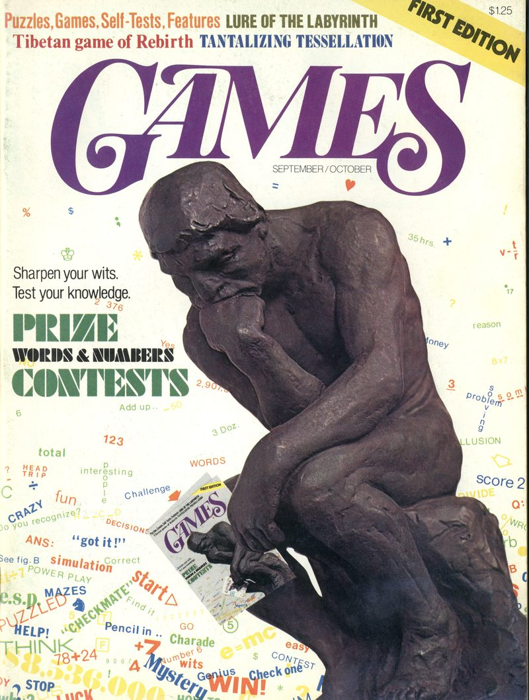
GAMES first appeared in September 1977, a bimonthly magazine of puzzles, games and contests. Inside, the puzzles you solve with a pencil had a section of their own.
Pencilwise
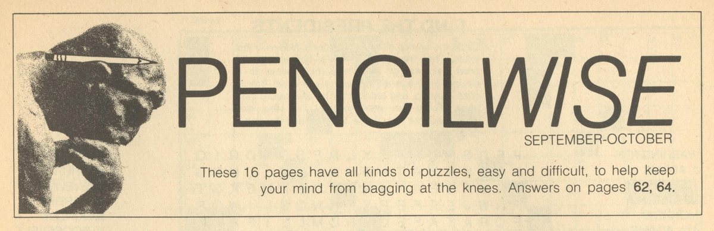
Pencilwise was the heart of each issue: sixteen or so pages of pencil puzzles, easy and difficult, with the answers at the back of the magazine (later in a section called the Answer Drawer). Crosswords were its backbone. Next to plain 15×15s it ran illustrated crosswords with pictures for clues, cryptics "à l'Anglaise", a five-by-five warmup for new solvers, a giant "World's Most Ornery Crossword", and puzzles that bent the rules on purpose.
This batch is the crosswords of Pencilwise from its first three years, September 1977 to the end of 1979: 81 puzzles from 14 issues. They are much harder to take apart than Judge's (our first series). A Judge page held one puzzle and its clues. A Pencilwise page can hold two puzzles, an intro, a drawing and a pointer to the answers forty pages on.
We used them as a test bench for a second version of the pipeline. The goal was simple to state: a pipeline that runs quietly in the background, where Claude spends tokens only where tools can't do the work, and a person looks only at what needs judgement.
Pipeline v2 at a glance
Why a version 2: what Judge taught us
Judge went well in the end: 531 puzzles, all of them now xd files linked to their scans. But three things about how it got there set the agenda for the next version.
An agent still saw every puzzle. Judge's big saving was the review packet: instead of the scan, Claude read a text view of the OCR's draft and only the crops code picked for what looked wrong. That brought a review from 60,000–90,000 tokens down to 17,741 a puzzle (measured below), and made Judge affordable. But every puzzle still went to an agent, including the many where nothing was wrong, and the agent still made judgement calls code could make: which line is the title, whether an answer is plausible, whether a person should look. Cost grew with the number of puzzles, not with the number of problems.
The same fact lived in several places. On the day we expected half an hour of touch-up, the review page, the xd files, the "is it done?" status and the published site each worked out the puzzle's state on their own, and they disagreed. Typed answer keys with no scan behind them, stale clues on the page, an importer that credited replayed work to the wrong person. The whole day went on finding which copy was right.
People fixed puzzles, not tools. The project's maintainer made 489 edits by hand on 172 of the 531 puzzles. Each fixed one puzzle. When the same mistake came from the same stage in the next puzzle, someone had to find it and fix it again.
What changed: stages that write things down
Version 2 is a chain of named stages, which we call milestones: harvest, OCR, layout, assembly, the text step, headers, the proof packet and triage. Each writes its result to disk in a documented format, along with what it was made from: the code version, the stages before it, and any decisions people made. A stage runs once and is reused until one of those changes. When a person decides a stage got something wrong, that stage and the ones after it run again, and nothing else does.
That answers Judge's bad day by construction. There is one copy of each fact, made by one stage, and everything downstream reads it. It also makes the pipeline cheap to inspect: an agent looking for a problem reads a stage's output, a diff or a crop, not the page.
The rest of this post walks along the diagram, one stage at a time, with the tool we built to see each one.
Stage by stage, and the tool for each
Every stage has a view, and the views link to each other, so a person can follow a puzzle from the proof page back to the page it was found on. They are where people work: whatever someone should look at is shown there with its evidence, and whatever they should decide is a button there that records who decided it.
Harvest: Issues, and Puzzles on the pages
The harvest decides which scans to read and which pages hold puzzles. Its views are on the watch page, which runs locally over a harvest's outputs, one tab per stage. The first tab, Issues, picks which scan of each issue to use: GAMES exists in several uploaders' scans, and a series is more consistent read from one.
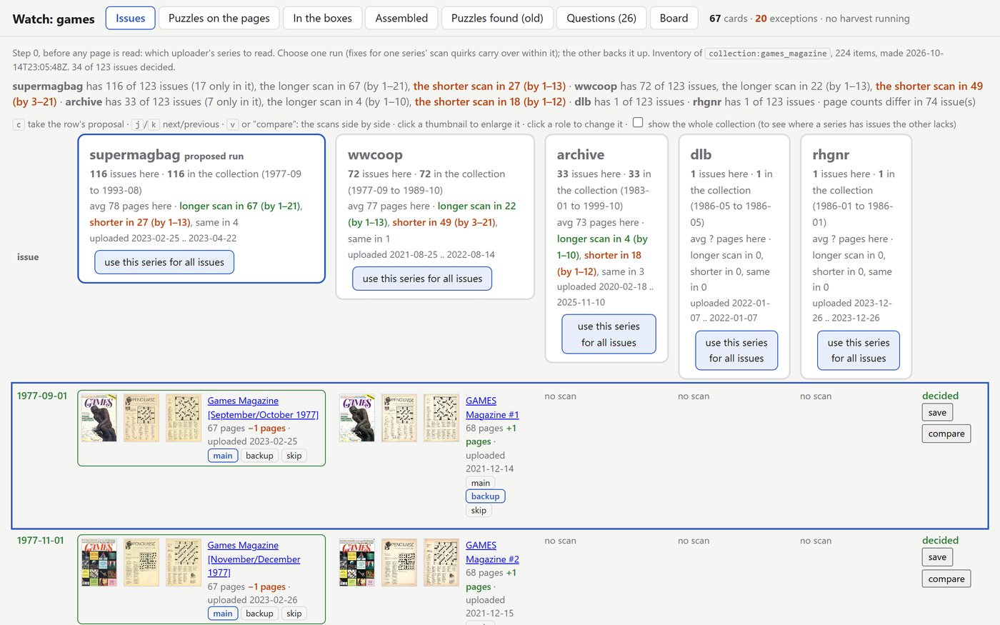
Then it finds the pages with puzzles on them. Puzzles on the pages shows every page the harvest kept, with a box around each puzzle. A box that is too big or too small is the first thing to check, and it can be redrawn right there.
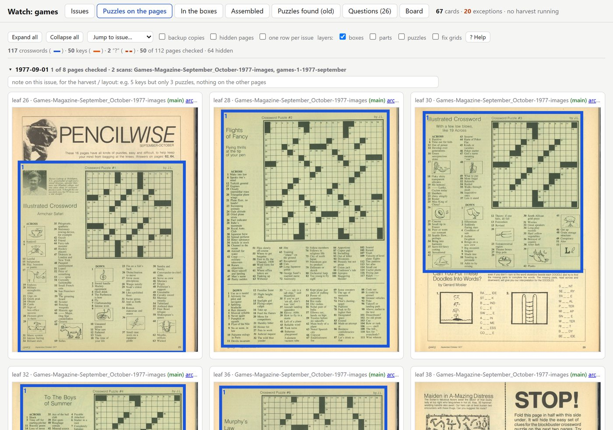
OCR: once a page
Machine OCR happens once for each page the harvest keeps. An off-the-shelf engine (RapidOCR) reads every line of text on the page with its position, and the result is stored and reused by every later stage; it runs again only if the page image changes. The squares of a grid and its answer key are read separately, by the project's own grid reader. Nothing after this point reads the page from scratch: the text step and the people who check its work see what the OCR read beside a crop of the scan.
Layout: In the boxes
Layout analysis (document layout analysis, in the usual term) finds the parts inside each puzzle's box: the grid, the clue lists, the headings, the paragraphs, and places the OCR's lines in them. In the boxes shows each part numbered and coloured by kind.
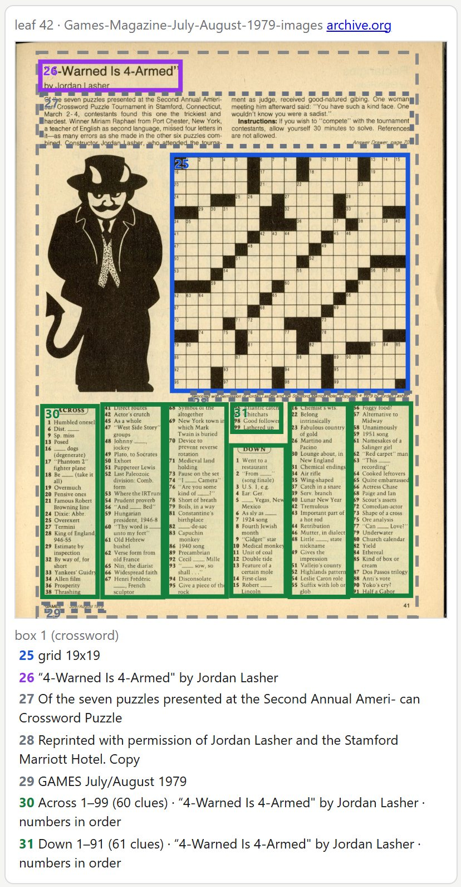
Assembly: Assembled
Assembly decides which grid, clue lists, headings and paragraphs on a page belong to which puzzle, and finds the answer key in a later issue. It runs with no one's help ("hands-off"), from the harvest's own boxes. When a puzzle points to a page the harvest never fetched, such as the page its answers are on, assembly writes a request for it; the next round fetches the page, reads it, and puts the issue together again, until nothing is left open.
Our first version of assembly also tried to decide which line was the title. On "4-Warned Is 4-Armed" it chose the biggest line near the grid: "Answer Drawer, page 70", a pointer to the answers in the page's footer. The real title sat above an intro paragraph that assembly had already set aside, so the next stage never saw it.
run 4, the text step's verdict: "...the title and byline are not among the printed lines and L2 'Answer Drawer, page 70' is not the title." run 4, its note on the tools: "assembly took the 'Answer Drawer' footer as the Title because it was the only large line near the grid; the real heading is presumably above the intro article, outside the crop." run 6, after assembly stopped choosing: Title ← B1 "“4-Warned Is 4-Armed”" Byline ← B2 "by Jordan Lasher" Author ← B2 "by Jordan Lasher"
From the text step's answers for this puzzle in runs 4 and 6
(textstep/run4-7779, run6-7779).
Claude's text step saw that the title was wrong, but it couldn't fix it: the line wasn't there. So assembly now only links. Every heading and block of text near a puzzle reaches the next stage whole, in reading order, and a separate step makes the first guess at title, byline and number from those lines. Measured on all 81 puzzles, that first guess got 62 titles right instead of 54, and 77 bylines instead of 75. The rule we took from it: a stage that throws away evidence hides its mistakes from every stage after it. Err on passing too much along.
Assembled shows each puzzle with the pages its parts came from, the page its key was found on, and the checks that failed.
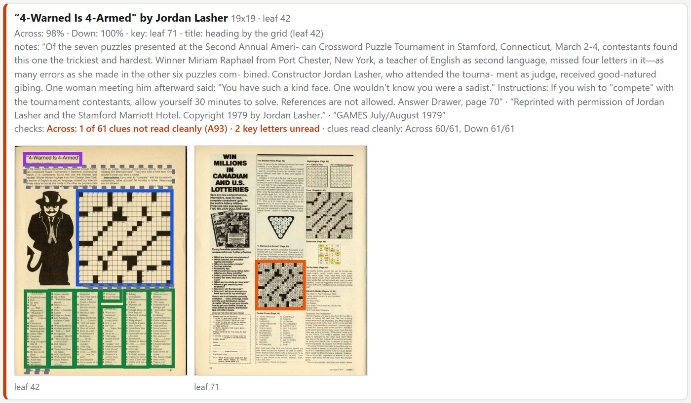
The same view shows the trouble on pages where two puzzles share a page. GAMES often printed the warmup beside the cryptic, and the two sets of headings, clue lists and intros sit close together:
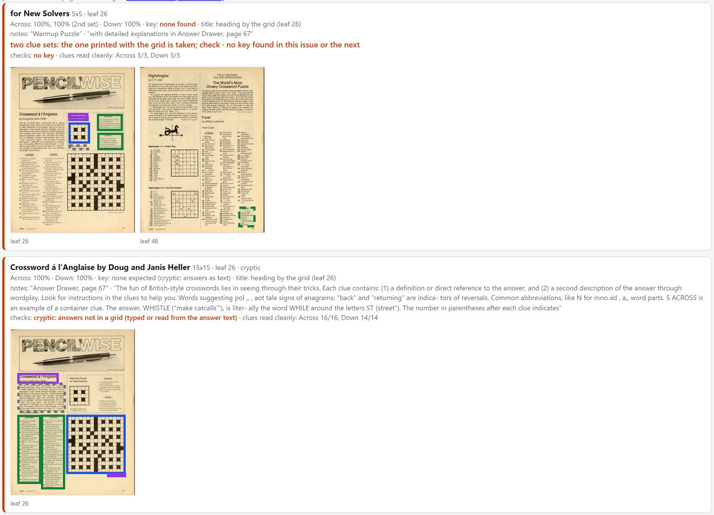
The text step: only what's wrong
Version 1 already gave Claude a packet instead of the page. Version 2 narrows it further. Claude still gets a text view of what the stages produced, with crops chosen by code for anything that looked doubtful, but the judgement calls have moved into code (the headers and triage, below), ten puzzles share one agent instead of four, and it writes back only the differences: a corrected clue, a label for a printed line, which line each header comes from, a fill-in blank kept as printed, and a one-sentence verdict when something is worth saying. For "4-Warned Is 4-Armed" that was six clues, two lines and three headers:
"A17": "\"Phantom 2\" fighter plane" why: opening quote dropped
"A53": "Where the IRT runs" why: words run together
"A74": "\"I ___ Camera\"" why: blank misplaced and words run together; answer AM A
"L6": "Reprinted with permission of Jordan Lasher and the Stamford Marriott Hotel.
Copyright © 1979 by Jordan Lasher." why: copyright symbol dropped by the reading
verdict: Tournament rebus puzzle: the key has squares holding letters-as-words (B, C, Q, Z,
'.' etc.), so odd-looking answers are expected, not key misreads.
Excerpt from answer.json, run 6. It left the other clues alone.
A rule carried over from Judge keeps this honest: anything it changes without having seen it on a crop is marked "not sure", and shows that way to the person who checks it.
On the proof page, the text step's verdict and a list of everything it did come first, each item linked to its row.
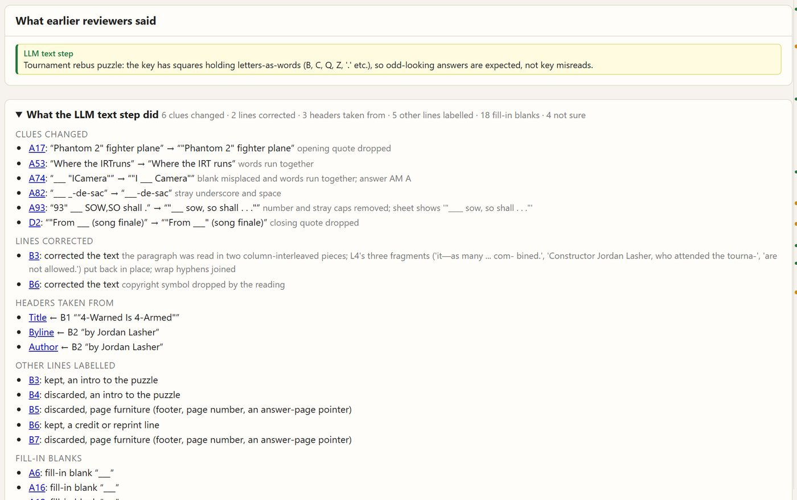
Headers, and the proof page
The proof page on the review site shows the xd file as it stands, part by part, each with its evidence. Version 2 added the headers: each of the xd's header fields in a fixed order, with the printed line it came from, the crop of the scan, what the OCR read, and the value in the xd.
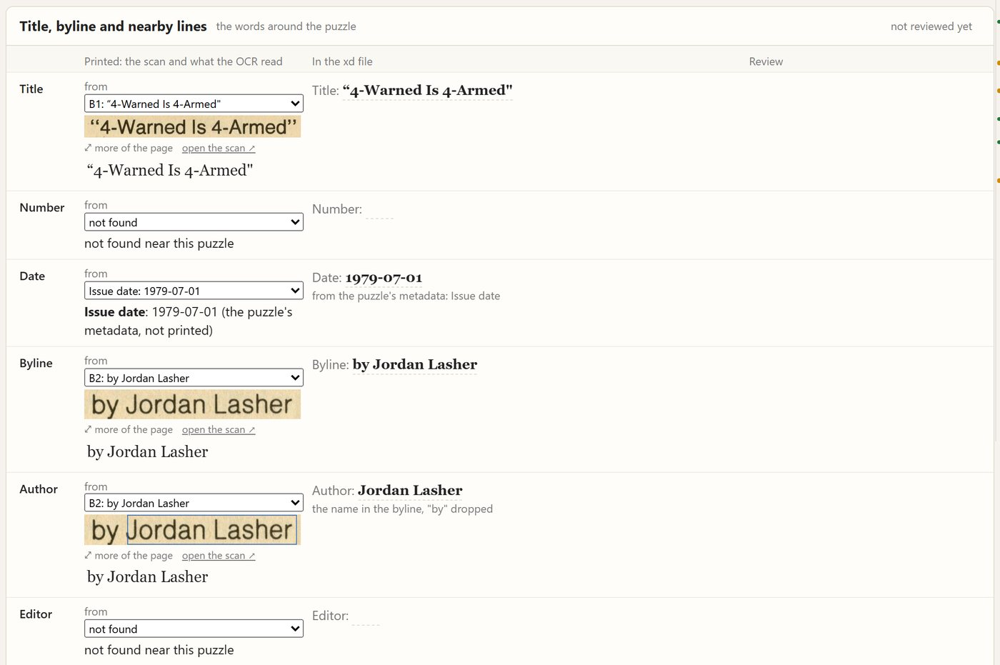
Below the headers come the other lines printed near the puzzle, each with Keep or Discard: an intro to keep, a page footer to drop. The text step suggests the label; a person can change it.
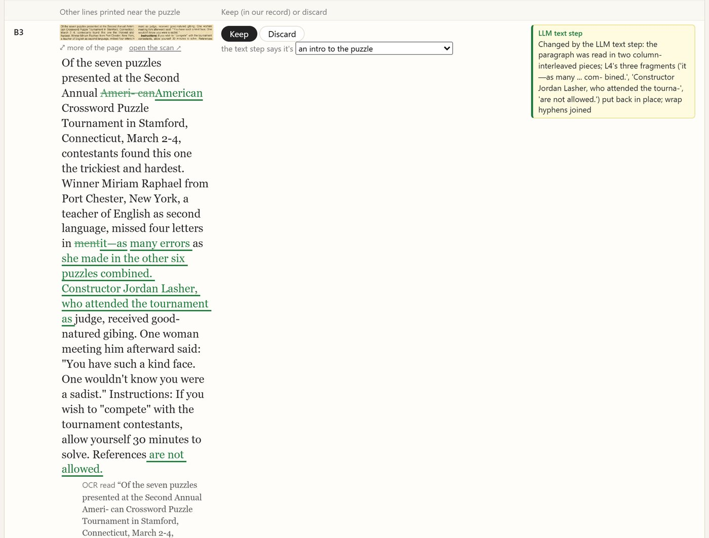
This is where the shared pages were caught. In run 4, the cryptic on the November/December 1978 Pencilwise page carried the warmup's title and byline, "Warmup Puzzle for New Solvers, by J. L. Wilkinson", and the text step let it pass. With every line passed along and the headers taken from printed lines by rule, run 6 has it right, with the crops to prove it:
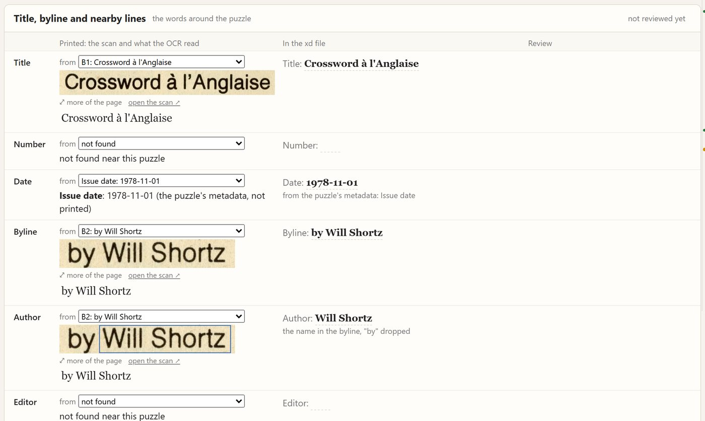
The rest of the proof page is the puzzle itself: the answer key with the scan beside our letters, then every clue under its printed line. A rail down the right edge marks every edit (green) and every doubt (amber), so a reviewer can jump from one to the next and skip the rest.
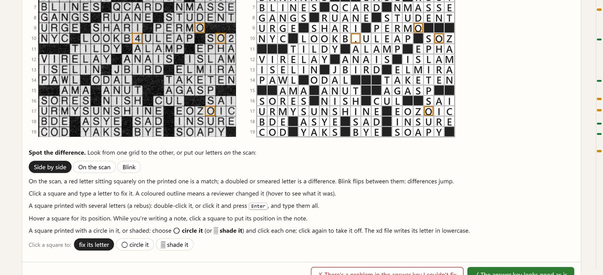
Triage, in code: Browse
After the text step, code sorts every puzzle into ship, glance, needs attention or not a crossword, each with reason codes: no answer key matched, key letters unread, a clue list missing, a header typed by hand, things the text step wasn't sure of. It costs no tokens.
Part of triage is a free cross-check against the xd corpus of later crosswords. A clue and answer from 1978 that also appear in gxd confirm each other; a near miss is a likely misreading. Of 5,489 clue–answer pairs in the batch, 2,532 match a pair in gxd exactly. Of the 14 answers that miss a gxd answer for the same clue by one letter, 11 turned out to be real misreadings of the key.
| Triage (81 puzzles) | Run 6 | Run 7 | Most common reasons, run 7 |
|---|---|---|---|
| Ship as is | 2 | 3 | |
| Glance | 36 | 43 | text step unsure (49), a changed clue not on its crop sheet (46), unknown answers (20) |
| Needs attention | 39 | 31 | key misread (11), something missing from the packet (11), a clue list asked for (8), clues unread (7) |
| Not a crossword | 4 | 4 | a stock-market board game, an answer page, a puzzle square, a word game |
From triage/run6/summary.md and triage/run7/summary.md, 18 October 2026. Run 7 is
run 6 rebuilt after the fixes described next, in code only: the text step's answers were reused, so it cost no
tokens. A puzzle can carry several reasons.
Browse shows every open puzzle as a picture of its grid, in order, so a batch can be scanned by eye: a grid that isn't a crossword, or a puzzle with no title, stands out.
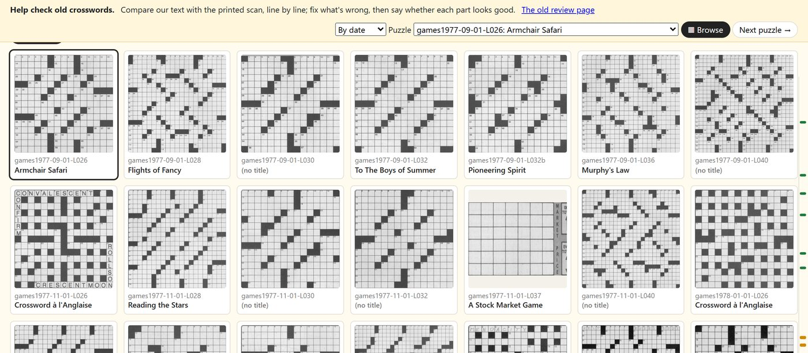
Screenshot of Browse's "Dropped: not a crossword?" list, with the four drops and their Restore buttons, once the drops reach the site's database (batch landing).
The batch page, and agents after kinds of failure
The batch page is where a batch is decided. Across the top, triage's counts and the decisions so far; below, the puzzles grouped by reason code, each group with what the agent pass found and fixed or left open, and a thumbnail per puzzle that opens its proof page at the right row. A person ships, holds or drops puzzles there, a group at a time, and each decision goes into the publication's ledger with who made it.
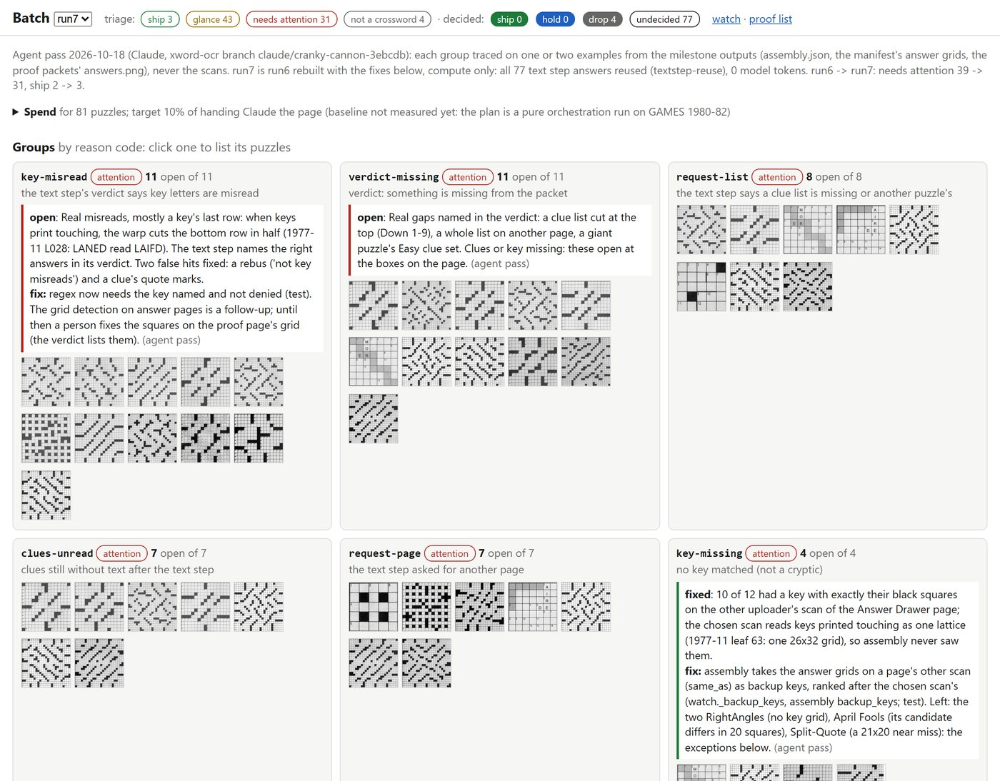
Final state of the batch page once the ship and hold decisions are made.
The biggest change is in what Claude is asked to do once triage has spoken. It no longer reads the flagged puzzles one by one. It takes one kind of failure, traces one example back through the stages to its cause, fixes the tool, re-runs the batch as computation only, and diffs the result. "4-Warned Is 4-Armed" was the model: one puzzle traced back to assembly, one change to assembly, all 81 puzzles re-assembled in code, and the first-guess titles of eight more puzzles came right with it. No agent went looking through the other 80; the text step ran again only on the 65 whose printed lines had changed.
The first such pass over the whole batch took one group at a time. Twelve puzzles had no answer key. Traced through assembly's output on one example, the cause was the Answer Drawer page: GAMES printed its keys touching, and the chosen scan read a whole block of them as one 26-by-32 lattice, so no key could match. The other uploader's scan of the same page had them apart. Assembly now also takes the answer grids from a page's other scan, ranked after the chosen one's, and 10 of the 12 found their keys. The pass looked at the scan itself for 2 of the 81 puzzles; everything else came from the stages' outputs. Rebuilt with that and two smaller fixes, the batch went from 39 puzzles needing attention to 31.
So cost grows with the number of kinds of failure in a batch, maybe five to ten, not with the number of puzzles. The same puzzle shows why not every flag is a failure. Its answer key really does print digits and letters as words, and our key reader, which turns a 2 into a Z on purpose because it's usually right, read GO2THE as GOZTHE:
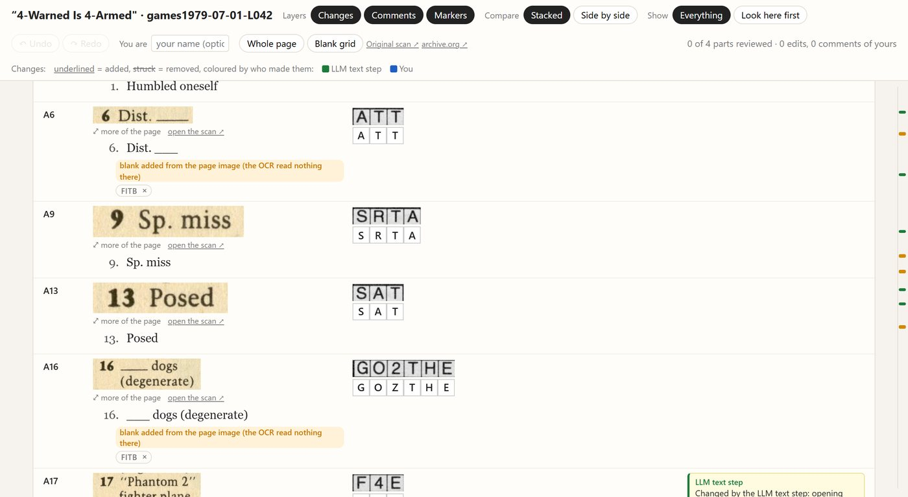
When a person steps in: Board
When an agent can't settle something, a person does, but not by retyping. They go to the stage the symptom points at, and walk back from there:
| If a puzzle has… | start at | and walk back to |
|---|---|---|
| a few odd answers or clues | the proof page: what the OCR read, beside the crop | how that clue or key square was read |
| a missing or wrong title | the proof page: the header and its evidence | assembly (what was linked), then the parts in the box |
| missing clues or key | assembly: the boxes on the page | the regions, then the harvest (the page was never found) |
What they record is a diagnosis ("this box splits the puzzle", "this list continues on the next page", "printed that way"), which reruns the pipeline from that stage. A typed correction fixes one puzzle; a diagnosis fixes the stage.
Board lays out every open exception by stage, so it's clear at a glance where a batch is stuck.
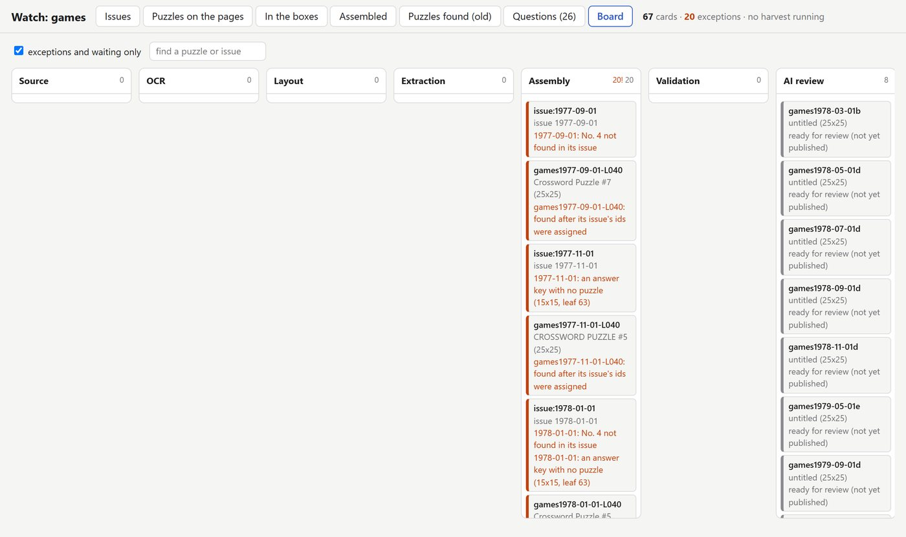
What it cost, measured
Every Claude agent's work is recorded in the session logs: how many tokens it read and wrote, and which puzzles it was given. The numbers here come from those records, using the same count for every run: the tokens each agent processed, divided by the puzzles it handled.
| How Claude works on a puzzle | Puzzles | Agents | Tokens a puzzle | Weekly Fable limit a puzzle |
|---|---|---|---|---|
| Claude reads the puzzle page and the key page (Judge, 1927 and 1928) | 2 | 2 | 77,288 | — |
| v1: agent review, text first, crops by code (Judge batches 7–12) | 311 | 78 | 17,741 | 0.15–0.17% |
| v2: the text step (GAMES, run 4, all 81) | 81 | 8 | 7,710 | 0.074% |
| v2: the text step again, where the lines changed (run 6) | 65 | 7 | 7,928 | 0.077% |
| v2: triage, gxd cross-check, headers, assembly | 81 | — | 0 | 0 |
| v2: the batch rebuilt after the fixes (run 7) | 77 | — | 0 | 0 |
| v2: the pass after kinds of failure (Opus, in the same session as building the batch page and import) | 81 | 1 | see note | |
Claude Fable 5.1 for the text step. Tokens: each agent's own total as the harness reports it (tokens read and written, not counting re-reads from the prompt cache), summed and divided by the puzzles it was given. Run 6 is over the 55 puzzles whose agents reported a total. Weekly limit: the plan's weekly Fable meter before and after a run, which shows whole percents (v1: 3% → 9% over 39 puzzles, and about 0.17% a puzzle over the 298 of 1929–1939; v2: 9% → 15% over 81, 15% → 20% over 65). The pass after kinds of failure ran in a working session that also built the batch page, the import and the fixes; together they wrote about 1,200 output tokens a puzzle (and 3,100 to the prompt cache) and re-read about 340,000 from the prompt cache, so the pass alone can't be separated out yet.
Version 2's text step costs 43% of version 1's review, and 10% of handing Claude the pages, which is the goal we set ourselves. Version 1's packet had already taken Claude off the scan; version 2 takes it further. Claude still reads a text view and crops code chose, but writes back only what's wrong, and ten puzzles share an agent's setup. And everything else that version 1 asked an agent to do, judging which line is the title, checking whether an answer is plausible, deciding whether a puzzle needs a person, is now code.
Fair comparisons need two caveats. The whole-page test was two Judge puzzles, not GAMES, and most of its 77,300 tokens (51,700) were a general-purpose agent's setup; batched ten to an agent like the text step, the same reading would be nearer 30,000 a puzzle, and version 2 a quarter of that. And a version 2 puzzle isn't finished when the text step is: the pass after kinds of failure comes on top. This time it ran in a session that was also building tools, so its own cost isn't separable; the next batch is meant to run it on its own and measure it, along with a whole-page baseline on GAMES itself.
How many puzzles needed a person
On Judge, a person edited 172 of 531 puzzles (32%), and every puzzle went through an agent's review first.
For GAMES: puzzles a person had to act on (diagnoses recorded, edits on the site) out of 81, and how many shipped untouched, from the batch landing's triage and the games ledger. Run 7's triage puts 3 at ship, 43 at glance and 31 at needs attention, waiting for a person's decisions on the batch page.
Accuracy, where we have reviewed truth
- Headers. The first guess at title, byline and number, measured on all 81 puzzles against the reviewed values: titles 54 → 62, bylines 75 → 77, numbers 79 → 80, after assembly stopped choosing.
- The gxd cross-check. 2,532 of 5,489 clue–answer pairs match gxd exactly; 11 of 14 one-letter near misses on answers were real key misreadings.
- The evaluation set. 40 reviewed Judge puzzles, read by the OCR alone, before any model: grid found 95%, squares right 95%, clues exactly right 87.5%, title 65%, key letters 84.5%. Every change to the pipeline is measured against it before it is merged.
The same measures on GAMES once its puzzles are reviewed (the evaluation set has no reviewed GAMES puzzles yet), and the final header counts on the landed batch.
What's still hard
- Answer keys. 15 puzzles have no key matched, many of them cryptics, whose answers GAMES printed as text, and 12 have key letters misread.
- Clue lists that wander. Two-line clues split onto the next number, intros set in two columns read interleaved, and the giant puzzles' second, easier clue list not captured.
- Things that aren't crosswords. A board game, an answer page and a "64 = 65" paradox square all came through as puzzles. Triage drops them now, and Browse lists what was dropped, with a button to restore it.
What's next
Version 3 pulls the pipeline apart along the same lines: the harvest becomes a stage of its own that any publication can run, the OCR library takes a page image and returns puzzle data, and blitz runs the batches, the review site and the export to gxd. Next up after GAMES 1977–1979: the rest of GAMES, and checking that nothing in version 2 was tuned to one magazine by running it on Judge again.
This is a research archive: an accurate record of puzzles as they were printed, each linked to its source scan. It isn't a place to play old puzzles. Thanks to the Internet Archive and the uploaders of the GAMES scans, and to Saul Pwanson's xd crossword corpus.